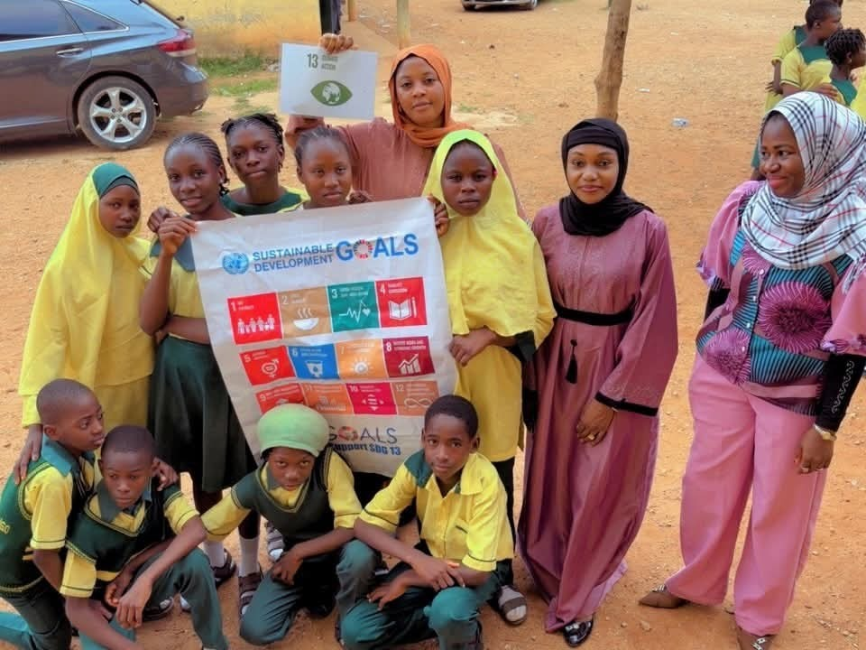
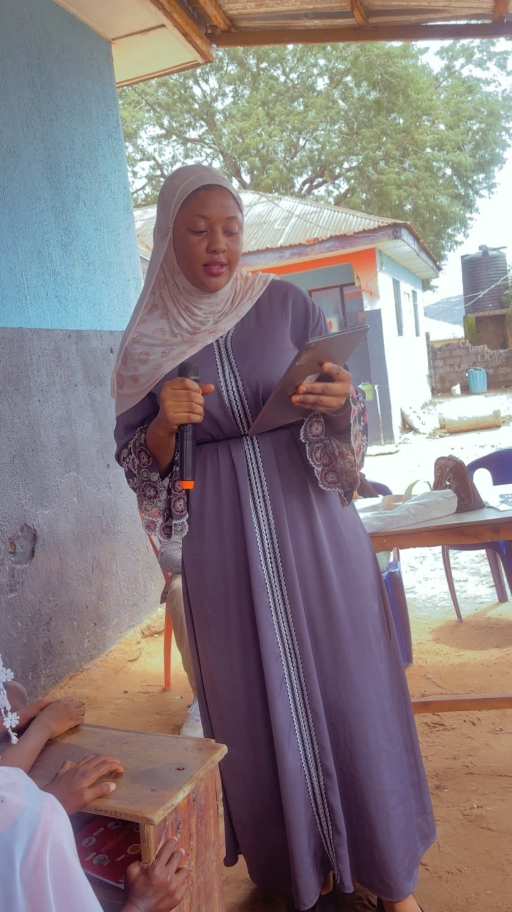

Who We Are
A youth-led foundation empowering girls, young people and vulnerable communities to lead sustainable change.
Our Mission
To empower girls, young people and vulnerable communities through education, leadership development, public health promotion, environmental sustainability, climate action, policy advocacy and community-driven initiatives that create lasting social impact.
Our Vision
A world where girls, young people and communities are empowered, healthy, environmentally responsible and equipped to lead sustainable development, advance gender equality and build climate-resilient societies.
Why we exist
Wasil GreenHer Foundation was founded in 2025 by Wasilat Kasim Imam, a Public Health professional and youth advocate passionate about creating opportunities for girls, young people and underserved communities.
The Foundation was established to address the interconnected challenges of gender inequality, limited educational opportunities, public health challenges, environmental degradation, climate change and youth unemployment.
Through innovative, community-led programmes and partnerships, we empower individuals and communities to become leaders of sustainable change.

Barriers we work to remove
We tackle barriers to education, public health, youth development, gender equality, environmental sustainability, climate resilience and community development, using evidence-based, community-driven interventions.
Our reach
We currently focus on communities across Nigeria, with plans to expand and collaborate on regional and international initiatives.
Who we serve
- Girls and young women
- Young people and children
- Vulnerable communities
- Persons with disabilities
- Schools and educational institutions
The people behind the mission

Wasilat Kasim Imam
Public Health Advocate, SDG Champion and youth leader. General Secretary of the YALI Network Kogi State Chapter (2026 Executive Council). She holds a B.Sc. in Microbiology from Prince Abubakar Audu University and is pursuing an M.Sc. in Public Health at the National Open University of Nigeria (NOUN).
We're growing our team. Volunteer with us →
Our outreaches are powered by a network of passionate young volunteers across Nigeria.
Work with us
We actively welcome partnerships with government agencies, NGOs, development partners, academic institutions, corporates, donors and community-based organizations.